Apakah Cara Hidup Sihat
- Apakah Cara Hidup Sihat?
Bahagian 1: Senaman
- Senaman
- Mengapa perlu bersenam?
- Senaman berkala
- Perhatian sebelum senaman
- Berhati-hati
Bahagian 2: Pemakanan
- Piramid makanan
- Pemakanan & mitos
- Pemakanan pesakit diabetes
- Diet secara sihat
(2)
- 6 kumpulan makanan
- Karbohidrat
- Sayur-sayuran
- Buah-buahan
- Produk tenusu/susu
- Protein
- Lemak & pemanis
- Makanan/minuman bebas dimakan
Bahagian 3: Berhenti Merokok
- Berhenti merokok
Kaunseling Kencing Manis
Sesi Ketiga
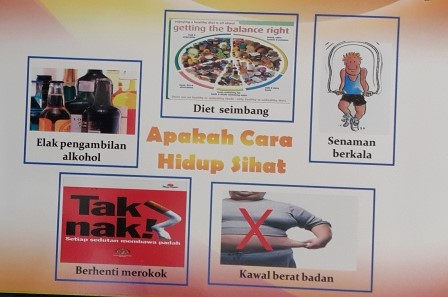
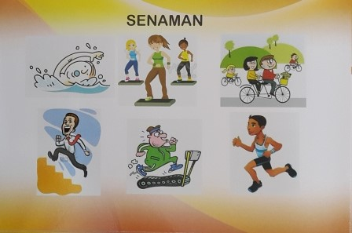
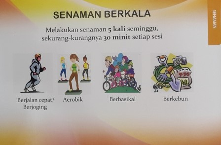
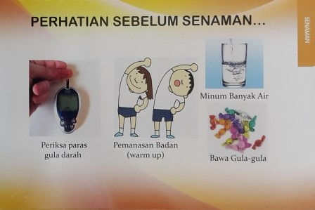
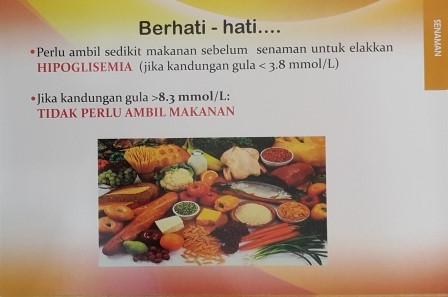
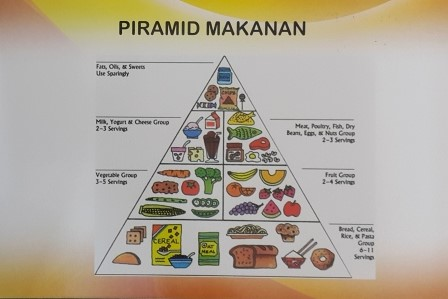
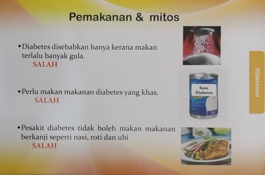
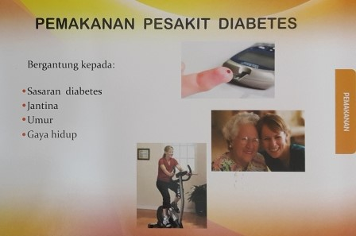
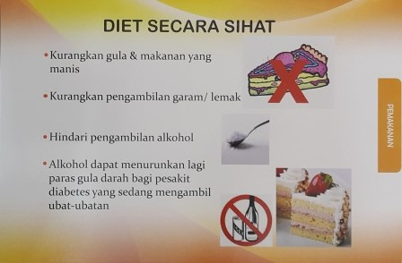
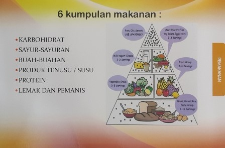
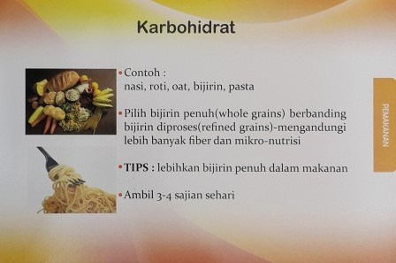
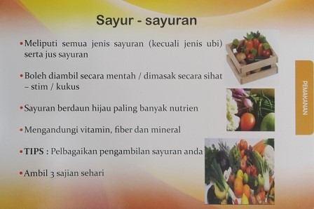
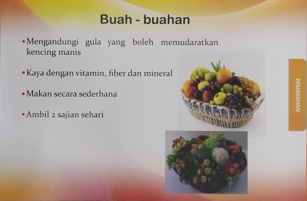
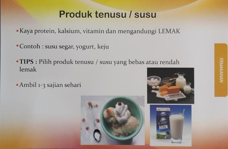
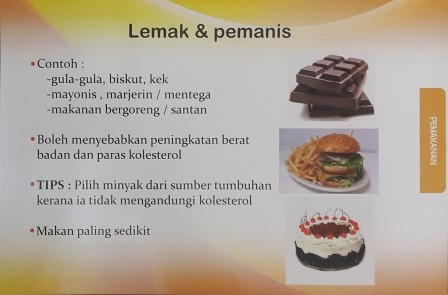
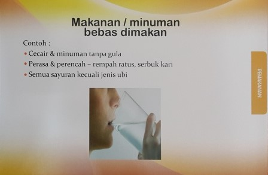
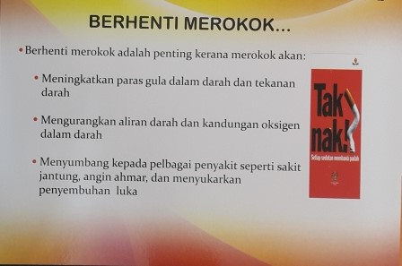